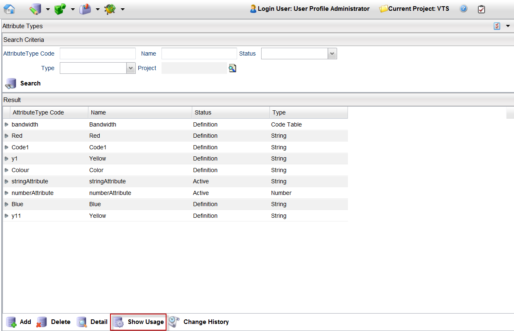
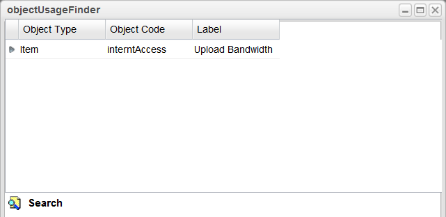

Show Usage of an Attribute Type
To view the usage of an attribute, follow these steps:
Note: A project must be opened to see the usage of an attribute type.
- From the menu bar, click Designer > Attribute Types.
- Search for all the attributes and select the one you want to delete, or search for a particular attribute.
- Select the attribute (for example, bandwidth) and click the Show Usage button.

- The objectUsageFinder page provides the information where that selected attribute is being used. Refer to Show Usage for more details.

|